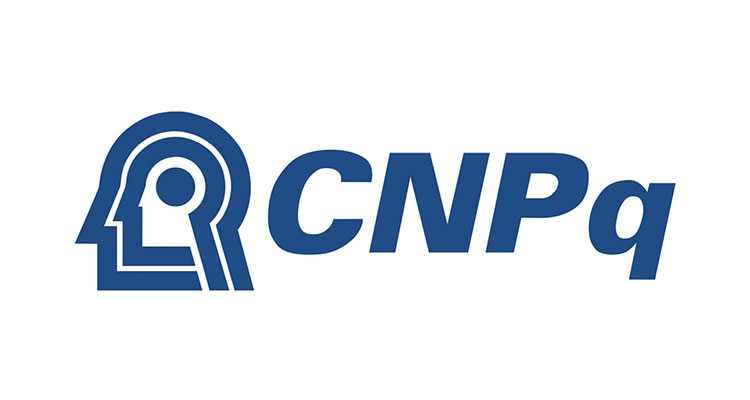
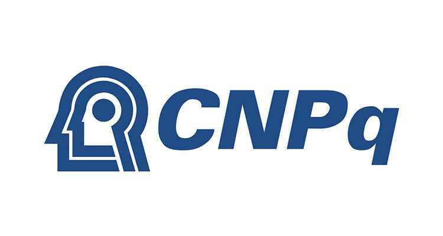
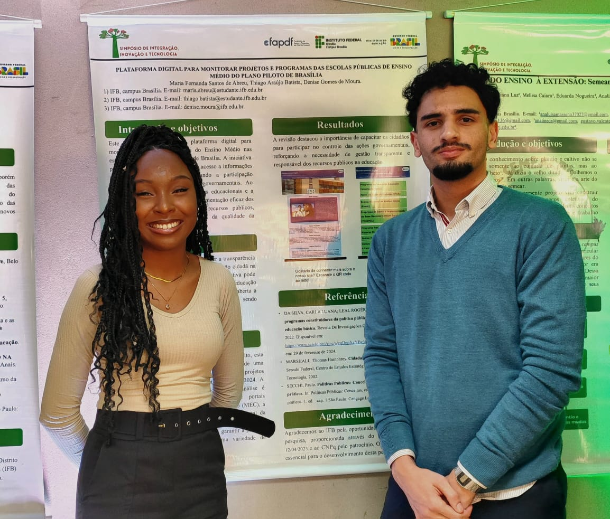

Bem-vindo ao nosso site!
Somos Maria Fernanda e Thiago Araujo, alunos do Instituto Federal de Brasília, nos cursos de Gestão Pública e Sistemas Para Internet, dedicados a um projeto no âmbito do Programa Institucional de Bolsas de Iniciação Científica (PIBIC). Sob a orientação liderada pela Dra. Denise Gomes Moura, Docente do Instituto Federal de Brasília, nossa proposta gira em torno de um tema essencial: o Monitoramento Digital de Projetos e Programas da Educação Pública nas escolas de ensino médio da Secretaria de Educação do Governo do Distrito Federal, especificamente localizadas no Plano Piloto.
Nosso Propósito
O objetivo primordial deste projeto é criar uma plataforma que forneça informações sobre os programas e projetos educacionais da Secretaria de Educação do GDF e do Ministério da Educação (MEC) voltados para o ensino médio no Plano Piloto, DF. Acreditamos na transparência como um pilar fundamental da gestão pública e, por meio dessa iniciativa, envolvemos tanto autoridades educacionais quanto cidadãos na avaliação e no acompanhamento dos projetos e programas.
Nossa Motivação
A concepção desta plataforma nasceu de nossa convicção de que a educação é o alicerce do desenvolvimento nacional. Acreditamos na necessidade de fiscalização e exigência para garantir uma educação de excelência no país. Os estudantes são o futuro e merecem uma educação de qualidade. Nossa plataforma visa aprimorar essa realidade, oferecendo uma ferramenta para a comunidade escolar e os gestores públicos atuarem em conjunto na construção de um sistema educacional mais eficiente e igualitário.